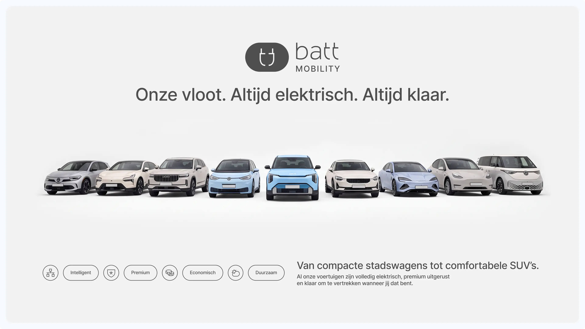
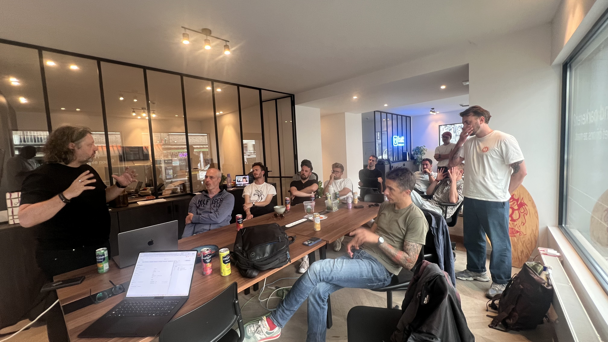
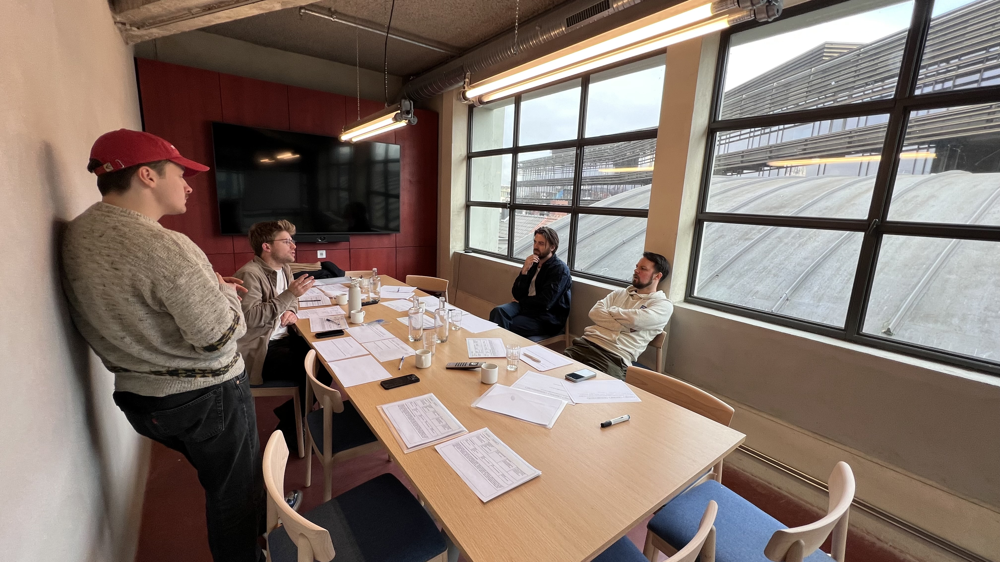
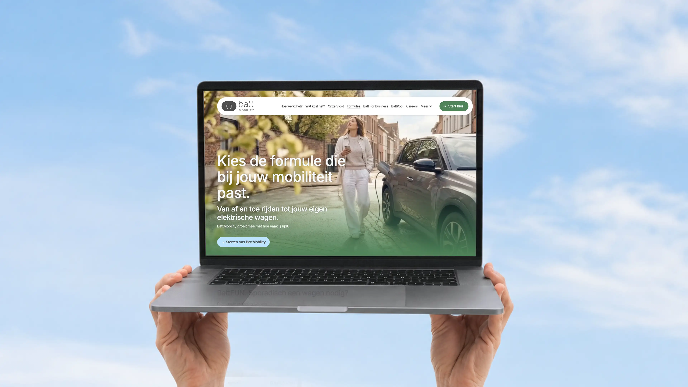
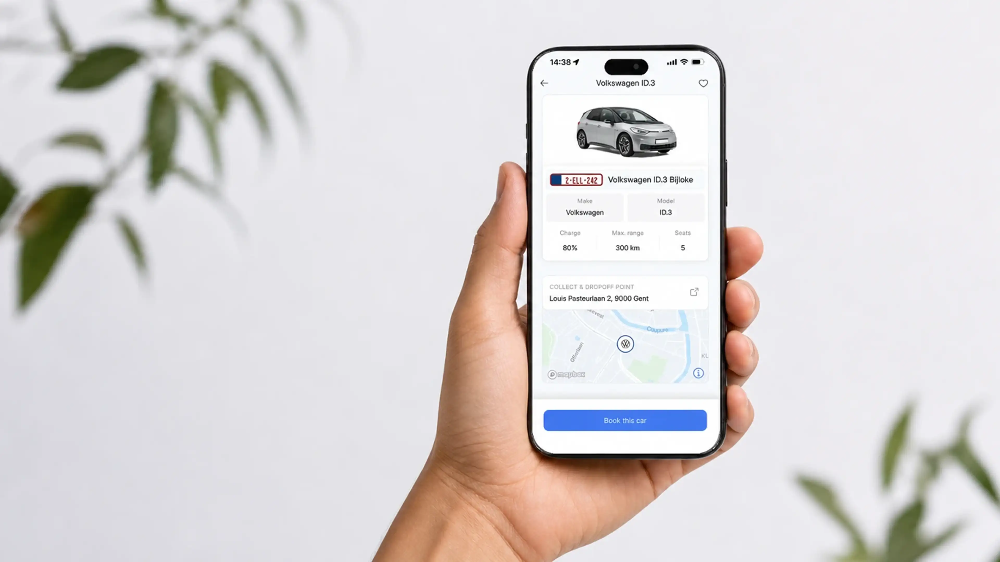
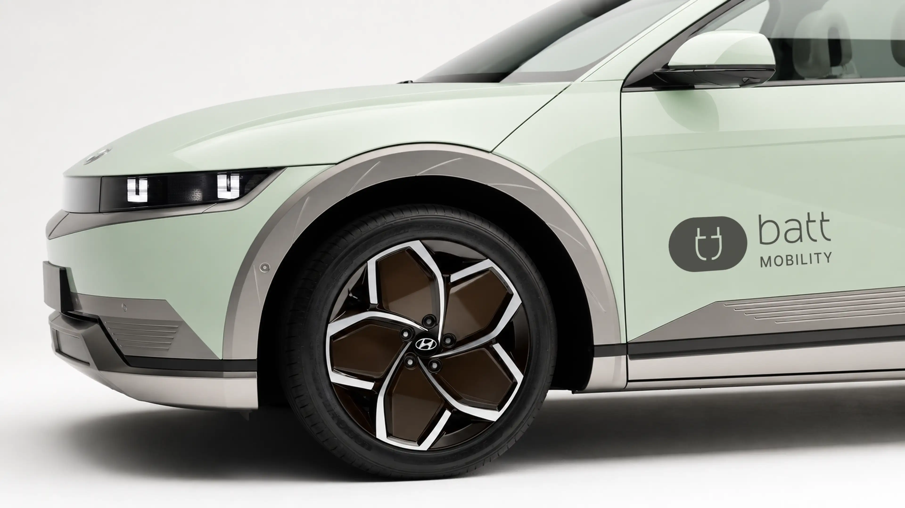
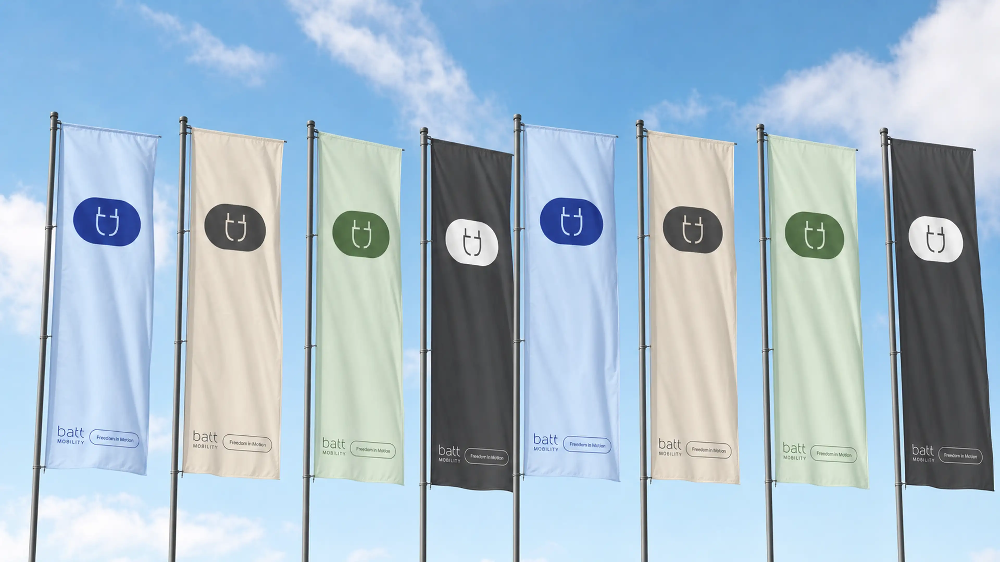
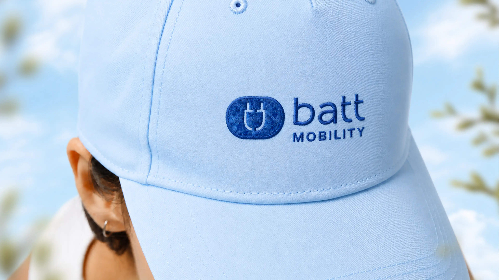
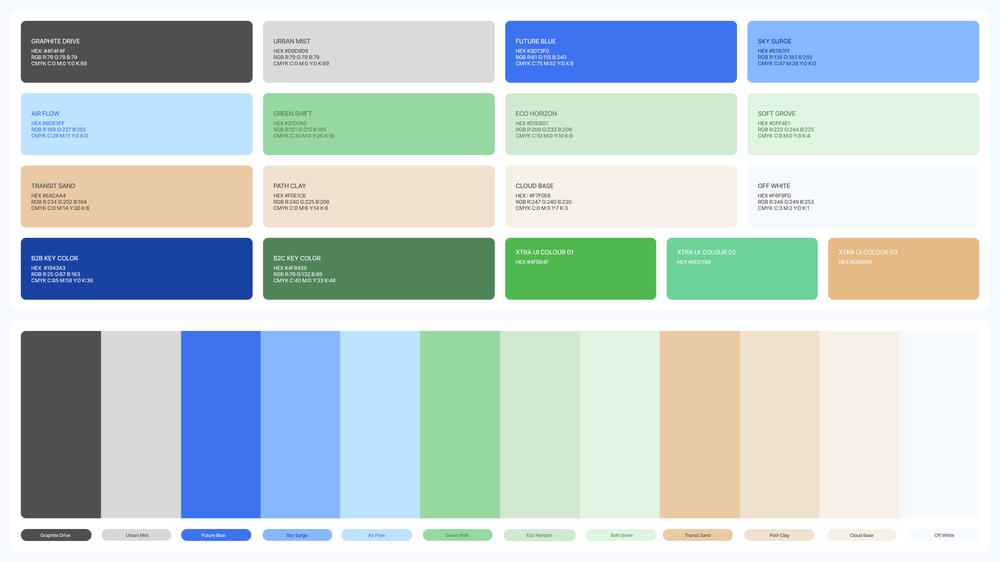

BattMobility nieuw
augustus 2025
Freedom in Motion
- Oprichters
- Chris de Guytenaer
- Bedrijf
- BattMobility
- Sector
- Gedeelde mobiliteit & Mobility-as-a-Service
- Locatie
- Ghent, Belgium

De uitdaging
Hoe maak je van een gedurfd idee, gedeelde elektrische mobiliteit voor iedereen, een merk dat mensen vertrouwen en een business die schaalt? BattMobility wil mensen en buurten bewegingsvrijheid geven zonder de last van een eigen auto. Onze opdracht: de strategie uittekenen, het merk bouwen en de digitale tools ontwikkelen die Freedom in Motion tot leven brengen.
Strategie & go-to-market
Elk sterk merk begint met helderheid. Via onderzoek en stakeholdersessies definieerden we de purpose, positionering en propositie van BattMobility en vertaalden we die naar een concrete go-to-market strategie: wie bereik je eerst, wat beloof je en hoe groei je? Een roadmap die het merk van concept naar een levende, groeiende community bracht.


De merkidentiteit
De identiteit moest menselijk, optimistisch en moeiteloos modern aanvoelen: mobiliteit die van iedereen is. We ontwierpen een flexibele visuele taal rond beweging en energie, met een fris kleurenpalet en zelfverzekerde typografie die overal werkt, van een telefoonscherm tot de zijkant van een deelwagen.





Het design system
Om alles consistent te houden terwijl het merk schaalde, bouwden we een compleet design system: de BattMobility 2025 Style Guide. Kleur, typografie, spacing, componenten, iconografie en regels voor elk touchpoint, vastgelegd in herbruikbare tokens en templates. Zo maakt het team razendsnel on-brand materiaal, zonder dat wij erbij hoeven te zijn.

AI-gedreven beeldtaal
Fotografie op grote schaal is traag en duur. Daarom ontwikkelden we een AI-beeldpipeline op maat die on-brand visuals genereert: mensen, plekken en voertuigen in de wereld van BattMobility. Zo beschikt het merk over een eindeloze, consistente en eigen beeldbibliotheek voor campagnes, social media en product.
Apps op maat: het Marketing OS
Sterke merken verdienen sterke tools. We ontwikkelden een reeks applicaties op maat, met een Marketing OS als kern, waaronder een templatebuilder voor social media, een e-mailbuilder en meer. Het team maakt nu in enkele minuten branded posts en e-mails, volledig binnen het systeem. Zo wordt het design system levende software.
De resultaten
Strategie, merk en tooling die als één systeem samenwerken, zorgden voor echt momentum: BattMobility groeide van 2.000 naar 3.000 gebruikers, een stijging van 50%, met een merk en een toolset die klaar zijn om verder te schalen. Freedom in Motion, waargemaakt.